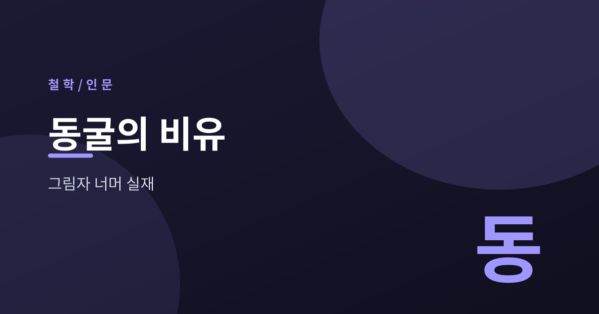
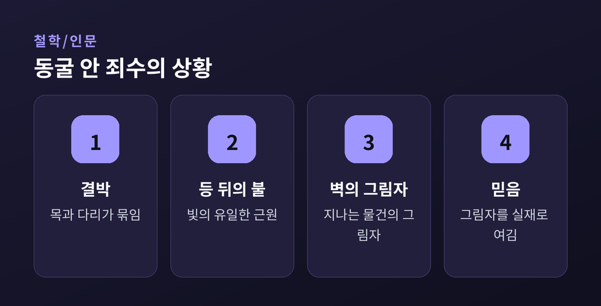
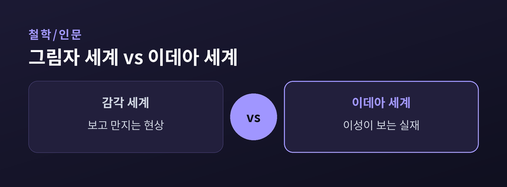
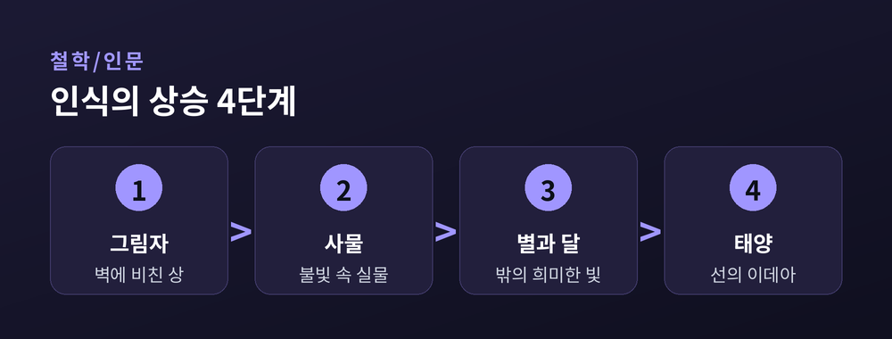
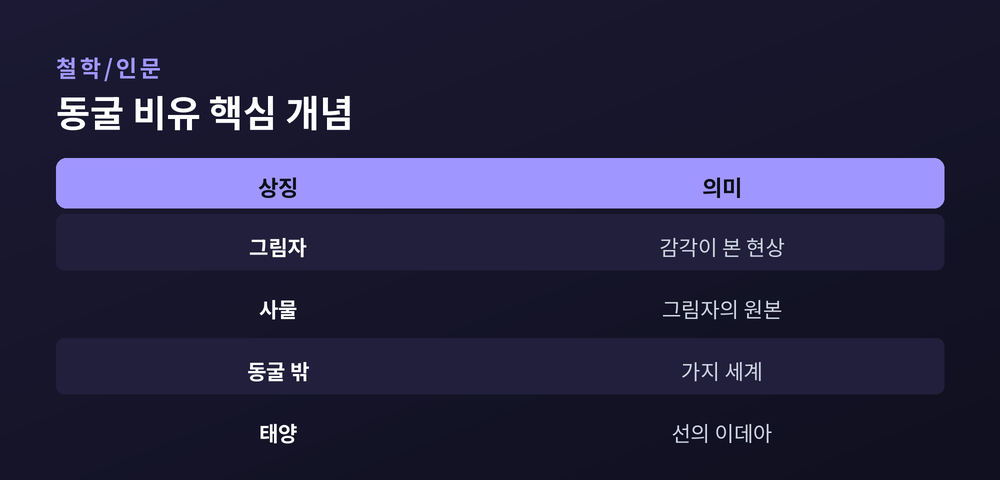

그림자 너머 진짜 세계

우리가 매일 보는 세계는 정말 실재일까요.
2400년 전 플라톤은 이 물음을 하나의 이야기로 남겼습니다.
바로 『국가』 7권의 동굴의 비유입니다.
동굴 깊은 곳에 죄수들이 있습니다.
태어날 때부터 목과 다리가 묶여 앞의 벽만 바라봅니다.
등 뒤에는 불이 타오르고, 그 사이로 물건들이 지나갑니다.
죄수들이 보는 것은 벽에 비친 그림자뿐입니다.
그들은 그 그림자를 세상의 전부라 여깁니다.

플라톤은 두 개의 층위를 구분했습니다.
눈으로 보고 만지는 감각의 세계가 하나입니다.
이성으로만 파악되는 참된 실재, 곧 이데아의 세계가 다른 하나입니다.
그림자는 사물의 모방이고, 사물은 이데아의 모방입니다.
동굴 안 그림자는 우리가 실재라 믿는 현상을 가리킵니다.

한 죄수가 사슬에서 풀려납니다.
돌아서 불을 보고, 동굴 밖으로 이끌려 나갑니다.
처음엔 눈이 부셔 아무것도 보지 못합니다.
차차 사물을, 이윽고 태양을 바라봅니다.
플라톤에게 태양은 선의 이데아, 모든 앎의 근원입니다.

깨달은 자는 동료를 구하러 동굴로 돌아옵니다.
그러나 어둠에 적응하지 못해 서툴게 굽니다.
죄수들은 그를 비웃고, 심지어 위협합니다.
플라톤은 여기에 철학자와 교육의 의미를 담았습니다.
진리를 전하는 일은 종종 조롱을 각오해야 한다는 것입니다.
위로 오르는 길과 태양을 봄, 그것이 곧 배움의 여정입니다.

이 비유는 여러 각도로 읽힙니다.
정치적 지도자의 자격을 묻는 이야기로도, 인식론의 우화로도 봅니다.
어느 해석을 택하든 물음은 남습니다.
우리가 보는 미디어와 통념은 그림자가 아닐까요.
동굴 밖으로 한 걸음 내딛는 용기를 플라톤은 권합니다.